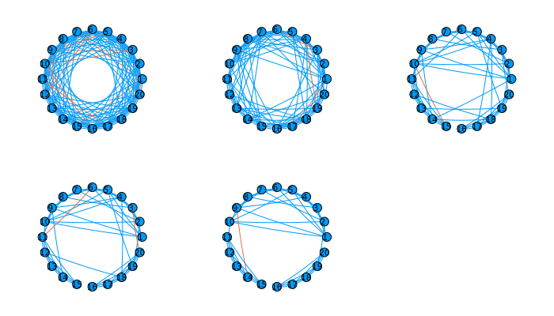
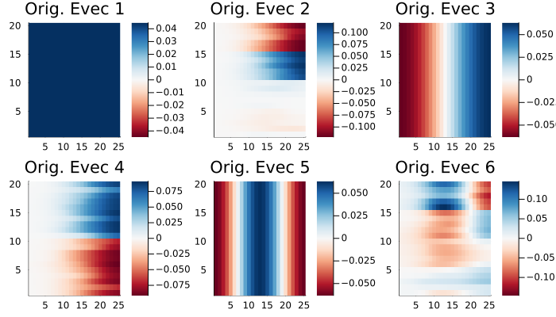
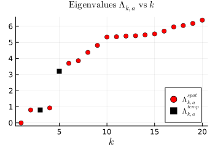
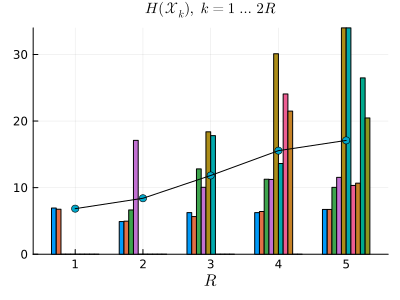
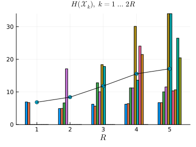
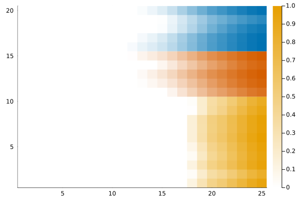
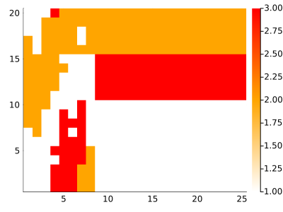

Getting Started
Installation
This package is not yet listed in Julia and this section will thus be updated in the future. Please obtain the latest version of Julia from here. Next download the package zip file from GitHub and from the directory run julia in the Terminal. Next run,
julia> ] activate .
julia> ] instantiateThis will install the required packages and also install the required Python packages via CondaPkg.jl.
Generating Multiplex Graphs
A multiplex graph can be supplied as a vector of Float64 matrices or by using the BlockGraph instance to build temporal networks.
Here is a simple example that constructs and analyses a simple multiplex graph,
using TemporalNetworks
list = [0,2]
η = 0.8
clusters = [[Array(1:20)],
[Array(1:10), Array(11:15), Array(16:20)] ]
degrees = [[14],
[5,4,4]]
block = BlockGraph(20, 15, list, η, clusters, degrees)
W1 = block()block() returns W1, a Vector{Matrix{Float64}} containing adjacency matries ordered in time corresponding to $20$ vertices each with transition from unclustered to the emergence of two fully intraconnected clusters.
Building a Temporal Network
The MultilayerGraph instance builds a temporal network using a connection rule, of type TemporalConnectivity. The default is Multiplex.
mlgraph = MultilayerGraph(W1, connect = Multiplex())One can visualize say the final layer using plot(mlgraph,17)

Spectral Partitions and SEBA
The SpectralPartition and SEBAPartition are the most important instances that compute spectral partitions using supra-Laplacians and the SEBA algorithm.
To compute a spectral partition simply run,
partition = SpectralPartition(mlgraph)This computes the supra-Laplacian $\mathbf L:= \mathbf L^{\rm spat} + a^2 \mathbf L^{\rm temp}$ where the parameter $a$ is computed by finding the point where the second spatial eigenvalue $\Lambda_{2,a}^{\rm spat}$ crosses the first temporal eigenvalue $\Lambda_{1,a}^{\rm temp}$. This is the default case, one can also compute the exact same value using RayleighBalancing(2).
The object partition contains the supra-Laplacian elements, the graph object mlgraph and the normalization for the Laplacian, which is IdentityNormalization() by default. Most importantly, it contains evecs and evals, which are ordered eigenvectors and eigenvalues respectively of the supra-Laplacian.
The infomation in partition is plotted using the plots command as follows,
p1, p2 = plot(partition)
plot(p1)
plot(p2) 
The eigenvectors 2 and 4 store (corresponding to the first two nontrivial spatial eigenvectors) important information about the partition. The partition elements embedded in the eigenvectors evecs are disentangled using the SEBA algorithm as follows,
seba_part = SEBAPartition(partition,2)This automatically detects the leading two non-trivial spatial eigenvectors and runs SEBA on the corresponding eigenvectors. It computes the corresponding SEBA vectors and computes the corresponding Cheeger ratios stored in seba_part.cuts. The vectors can be plotted as follows,
p1,p2 = plot(seba_part)
plot(p1...)
plot(p2) 

We see that the first three SEBA vectors are meaninful, while the last vector corresponds to a very high Cheeger ratio. Thus this is discarded. Finally the network partition can be plotted as follows,
plot(seba_part, [1,2,3]) # 4 is removed as it is not meaningful
Comparison with existing methods
The Leiden algorithm can be called from the Python package leidenalg via PyCall as follows,
leiden_partition = leiden_slice(partition)This calls the Leiden algorithm on partition.graph and computes a slice-by-slice Leiden partition, which is stitched together by solving the minimum edge-weight cover problem on the super graph of clusters. Finally, the Leiden partition is plotted using,
heatmap(leiden_partition[2], c=cgrad([:white, :orange, :red]), size=(400,300), dpi=300)